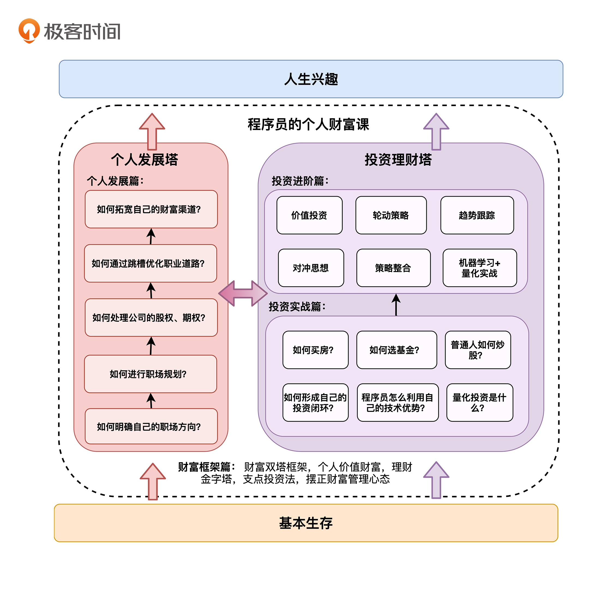

- 00 开篇词 为什么说程序员最适合学财富管理？.md.html
- 01 财富框架：建立属于你自己的财富双塔.md.html
- 02 个人发展：你自己的发展才是最大的财富源泉.md.html
- 03 理财金字塔：如何建立稳固的投资理财结构？.md.html
- 04 实战知识：有哪些收益稳健的经典资产配置组合？.md.html
- 05 支点投资法：主动投资是讲逻辑的！.md.html
- 06 不当韭菜：在财富管理的过程中摆正心态，知己知彼.md.html
- 07 职业方向：如何选择一个有前景的职业方向？.md.html
- 08 职业规划：大公司VS小公司，怎样选择更有前途？.md.html
- 09 期权股权：如何正确处理公司的期权、股权？.md.html
- 10 跳槽涨薪：如何规划一条合理的职业道路？.md.html
- 11 财富拓展：35岁失业？程序员如何拓宽财富渠道？.md.html
- 12 房产投资：如何做出理性的买房决策？.md.html
- 13 实战知识：让我们编程计算下怎么还房贷最合适.md.html
- 14 基金投资：如何让专业人士帮你赚钱？.md.html
- 15 实战知识：如何选出一只优质的基金？.md.html
- 16 股票投资：最适合散户的股票投资方法是什么？.md.html
- 17 投资闭环：如何成为越来越专业的投资者？.md.html
- 18 技术优势：程序员如何用技术超越其他投资者？.md.html
- 19 量化投资：典型的量化投资系统都包含哪些模块？.md.html
- 20 价值投资：永远不过时的中长期投资策略.md.html
- 21 趋势跟踪：怎样跟着趋势一起赚钱？.md.html
- 22 轮动策略：如何踩准市场变换的节奏？.md.html
- 23 对冲思想：这个世界上有稳赚不赔的生意吗？.md.html
- 24 多因子模型：整合不同策略，形成合力的顶层框架.md.html
- 25 机器学习：我们能用机器学习来建立投资模型吗？.md.html
- 26 量化实战：从0到1搭建起一套简单的量化投资系统（上）.md.html
- 27 量化实战：从0到1搭建起一套简单的量化投资系统（下）.md.html
- 番外一 王喆对话李腾：程序员对基金经理的灵魂十问（上）.md.html
- 番外三 有哪些能够持续学习的参考资料和相关网站？.md.html
- 番外二 王喆对话李腾：程序员对基金经理的灵魂十问（下）.md.html
- 番外四 知识总结：这门课的全部思维导图.md.html
- 答疑课堂（一） 财富框架篇、个人发展篇思考题集锦.md.html
- 答疑课堂（二） 投资实战篇、投资进阶篇思考题集锦.md.html
- 结束语 知行合一：财富管理是一生的事情.md.html
- 捐赠
00 开篇词 为什么说程序员最适合学财富管理？
你好，我是王喆，从清华大学计算机系毕业后，我一直从事着算法工程师的工作，现在是美国最大的流媒体平台Roku的推荐系统架构负责人。
作为一个写了15年程序的程序员，我有两个愿望。第一个愿望，就是在自己的专业领域做精做深，建立自己的技术影响力。所以，除了在工作中不断挑战自己，我同时还出版了几本技术畅销书，申请和发表了十几项专利和论文，领导了几个开源项目，并在极客时间讲授了一门课程《深度学习推荐系统实战》。
第二个愿望，是管理好我自己的钱，让我的财富稳健增值。这不仅是为了提升自己和整个家庭的生活质量，乃至幸福感，也是希望能够在未来某个时候，不受客观条件的约束，去追求更符合内心的理想。
为此，我大二的时候就买入了自己的第一支股票。十几年来，我踩了不少坑，但也积累了大量财富管理的经验，并从中受益颇丰。无论是房产，还是基金、股票、期货，又或者是创业、期权，这些和钱有关的项目我都参与过，管理的可投资资产也从最开始的几万块，逐渐上升到千万的级别。
有了丰富的投资经历，我开始有意识地对自己的经验进行整合和输出。2014年的时候，我跟我清华的师兄，当时银华基金的投资经理李腾，共同创建了“科学投资”网站和知乎专栏。从那时起，我会定期跟包括李腾在内的几位专业投资人进行交流讨论，总结自己个人投资行为的得失，提炼投资经验。
这不仅是为了提升个人的财富，更重要的是，我们都看到过身边的家人、朋友、同学，因为陷入各种各样的投资误区，蒙受了经济上的损失。因此，我们都有一个愿景，就是让科学的财富管理理念影响身边的人，乃至于更多的普通投资者。
2021年，李腾以首席投资官的身份，加入了金融科技公司璞元科技，我也受邀担任高级顾问。这让我们能够投入更多的资源和精力，把正确的财富管理理念传递给需要的人。
所以，这门课程中，我会站在一个“爱管钱”的程序员的角度，背靠李腾等中国顶级投资专家的支持，给程序员同行们讲一讲，怎么管理好我们自己的财富，怎么管理好我们职业和人生的发展。希望你听了这门课程，能让自己和家人生活得更好。
让5%的时间产生50%的收益
我相信绝大部分的程序员，至少是所有来“极客时间”主动学习的程序员，一定都是非常聪明且努力的同学。在我将近十年的职业生涯中，我遇到的同事们也大都是工作非常认真，本身也非常聪明的程序员们。从收入上来说，他们往往也是同龄人中的佼佼者。这些程序员同学，从来没有被工作中的困难绊倒过，却总是在“管钱”这个事情上栽跟头。
买房嫌太贵，不知道该不该出手，总是错过最佳时机；炒股很热情，投入大量业余时间，却总是被割韭菜；随大流买基金，又不知道该怎么挑，随便选的基金总是表现平平……
有时我就在想，是因为管钱这件事情太难吗？难道比我们遇到的各种各样的编程语言还难学吗？难道比我们要掌握的奇奇怪怪的算法和模型更复杂吗？
我看未必。
我们会在“管钱”上栽跟头、走弯路，不是因为这事有多困难，而是因为我们没有像重视自己的工作一样重视它。
也许你会说，我当然要重视工作了，要不然挣不到钱，又何谈管钱呢？这种想法不是没有道理，但是你有没有想过：为了挣钱而行色匆匆的我们，愿意花100%的精力在工作上，却从没有停下脚步，花哪怕是5%的时间认真思考下关于“钱”的问题。我们为了挣钱，可以用996的节奏工作，但真的挣到钱了，却总是往那里一放，任其贬值，或者随便投到某些看似会赚钱的地方，被别人收割。这不是很荒谬吗？
英文中有个词叫“low hanging fruit”，字面意思是“挂得很低的、容易摘的果实”，含义是那些容易实现的目标。我相信，一个真正的聪明人，应该学会用更少的精力去摘到那些生活中的low hanging fruit。和解决你工作中那些极端刁难人的问题相比，进行有效的财富管理就是“容易摘的果子”。而我要做的，就是教给你正确的财富管理方法，让你能不那么费力地跳一跳，就能摘到这些果子。
如果你现在把100%的时间都放在工作、学习上，那么不妨挤出5%的时间，学习正确的财富管理方法。随着时间的推移，我相信财富管理带给你家庭的收益将逐渐超过工资收入。用5%的时间，换取至少50%的收益，聪明的你不可能错过这笔买卖吧。
为什么说程序员是最适合学习财富管理的群体？
看到我们的课程名字叫“程序员的个人财富课”，你可能有些好奇：财富管理不是人人都能学吗？为什么不做一门适合所有人学习的财富管理课？
其实，这门财富管理课的定位，我在设计课程之初就已经想好了：一定要做一门专属于程序员朋友的财富课。为什么呢？
除了我自己就是程序员这个因素之外，更重要的原因是：我认为程序员是最适合学习财富管理的群体。为什么这么说呢？我想主要是因为我们有三大优势。
优势一：程序员的逻辑思考能力和理性的思维方式，正是一个成功投资者的最宝贵品质。
我们每天与工作打交道的方式，就是把产品、业务的逻辑梳理出来，形成规则，变成程序，这跟投资理财的过程太像了。投资的过程，就是从一次次的投资行为中提炼规则，形成交易系统，然后根据反馈不断进行调整的过程。
我们中的很多人有不少投资失败的经历，原因可能就是我们没有意识到，要把工作中严谨的思考方式迁移到财富管理的过程中来。而这一点，就是这门课要解决的最关键问题。
优势二：和其他普通投资者相比，程序员拥有巨大的工具优势。
我们可以用编程这个工具，快速验证大量别人花很多时间都讨论不清楚的问题。我记得我在第一次买房的时候，跟其他很多购房者一样，不知道贷款到底贷多一点好，还是贷少一点好；是早点还好，还是晚点还好。
后来，我干脆编了一个程序，模拟了我之后的还款、投资、工资收入等等的变化过程。最终，根据我自己的理财能力，做出了长贷款、晚还款的决策。事实证明，这个决策是非常正确的，帮助我抓住了后续的很多次投资机会。
当然，每个人的客观条件、投资能力都不一样，到底哪种方式更适合你，需要你自己去分析。但这个分析验证的过程就是我们程序员每天都在做的事情，是我们最擅长的事情。
优势三：程序员这个职业，本身就有挖掘不完的价值。
可以说，程序员的职业道路本身就是一座大金矿。我们身处还在高速发展的互联网IT领域，拥有一些身处传统行业的人不具备的优势。我们需要考虑的就是如何管理这座财富金矿，让我们的工作给我们带来更多的价值。
我在知乎有超过十万的关注者，他们向我咨询过大量关于职业发展的问题。在这个过程中，我帮助了100多位程序员做出了更符合长远利益的职业规划。
其实，对于程序员这个职业来说，要想获得年薪超过100万的职位，的确需要一些机遇；但要从年薪20万提升到100万，你是完全可以通过合理的职业规划和个人发展规划来实现的。这样高的职场天花板，是其他传统行业很难相比的。
总之，我们程序员手握逻辑思维、工具优势、职业优势这三大“利器”，你说，如果连我们都不学财富管理，还有谁适合去学呢？
这门课是怎么设计的？
既然作为程序员的我们，在财富管理上有天然的优势，那我们如何把这种优势发挥到最大呢？这正是我要通过这门课为你解决的问题。
在设计这门课时，我就希望它能够涵盖我们程序员关心的各个方面，从理财到“理自己”，从买房到炒股，从跳槽到副业，解决你在管理财富时的大多数痛点问题。
同时考虑到，我们这个群体不具备扎实的理财知识基础，所以我不会给你引入过多的专业理财概念和理论，即使必须要引入的话，我也会使用真实的案例、数据、故事，来帮你吃透每一讲的内容，希望让你利用碎片化的时间，就能掌握财富管理的关键点。
具体来讲，我把课程分成了“财富框架篇”“个人发展篇”“投资实战篇”“投资进阶篇”四大模块，按照由总到分、由浅入深的逻辑，帮你搭建起个人财富体系。

财富框架篇：从0出发，搭建起正确的财富管理体系
我刚才提到了，这门课要解决的最关键问题就是帮你搭建起个人的财富体系。所以在第一个模块，我们首先要做的就是树立正确的财富观，搭建稳固的财富框架。在这个基础之上，我们再谈细节才有意义。
所以在这个模块，我会帮你充分发挥程序员在逻辑思考能力上的优势：搭建起适合你自己的“财富双塔框架”，纠正那些普遍存在的投资误区，树立起“讲逻辑”这个最重要的投资支点。
个人发展篇：你自己的发展才是最大的财富
我们在上面已经明确了这一点：程序员的职业道路本身就是一座大金矿。那么对我们来说，财富管理的范围绝不仅仅是投资理财，自己个人价值的提升才是最大的财富源泉。所以在这一部分中，我会和你谈谈程序员最关心的几个人生话题，包括职业发展、跳槽谈offer、挑选公司原则、主业副业等等。
我相信，通过这个模块的学习，你一定能成为那个更有价值的自己。
投资实战篇：Talk is cheap，show me the code
我们程序员总是讲，“Talk is cheap，show me the code”。其实投资理财也是一样的，大道理我们都知道，但在实战中能不能应用好却是另外一回事。
这一部分里，我们不讲理论，就讲实战，用真实的例子和数据讲清楚买房、炒股、选基、量化投资这几个程序员最感兴趣的投资问题。
值得一提的是，刚才我提到的编程还房贷的方法，还有其他技术和投资相结合的内容，我会在后面的两个模块中给你详细讲解。这门课会帮助你将技术作为投资工具，最大程度发挥程序员自身的技术优势。
投资进阶篇：让我们从专业投资者那里汲取营养，为我所用
在最后的进阶部分，我会邀请李腾和我一起讲解专业投资团队的投资理念和主流策略。在这一模块中，我们也会介绍程序员很感兴趣的量化投资系统的技术架构，以及机器学习在量化投资中的应用思路。
通过这个模块的学习，希望你能用专业的投资知识武装自己，将它们应用到你自己的投资行为中。更重要的是，如果你想进阶成一名专业的投资者，也可以从中，一窥投资领域的前沿知识，让它成为你专业投资之路的第一课。
好了，最后，我还想送你一句话：努力做一个更好的、普通的自己吧。接受和理解自己的“普通”是学习这门课的前提，我们中的99.9%都不会是投资天才，只有以一个普通人的姿态去面对财富管理这件事情，才能够扎扎实实地积累自己的财富，而不是搭建一个由自负和运气组成的空中楼阁。
而且我们的财富课也不是什么致富宝典，能让你直接实现财富自由；更不是什么仙丹妙药，能解救你于生活的水火。但是，只要你带着平常心出发，跟我一起走上财富管理的旅程，在前进的路上，你一定会变成更好的自己，这甚至是比赚更多的钱还重要的事情。
财富管理是一个漫长的过程，也是一件要陪伴你一生的事情。我很荣幸你能听我讲到这里，让我在你的脑海中埋下一颗财富的种子。那下面，就正式开始我们的财富之旅吧。
© 2019 - 2023 Liangliang Lee. Powered by gin and hexo-theme-book.